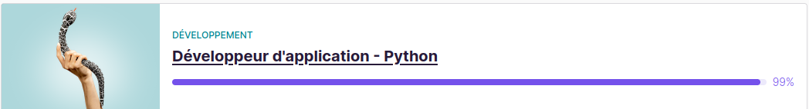

À Propos du Projet
Le projet « Orange County Lettings » est une application web développée par une start-up américaine en pleine croissance, spécialisée dans la location de biens immobiliers.
La direction a formulé les demandes suivantes :
Restructuration de l’architecture modulaire.
Réduction de la dette technique.
Mise en place d’un pipeline CI/CD avec déploiement automatisé.
Intégration de Sentry pour la surveillance des erreurs.
Création d’une documentation technique.
Pour plus de détails sur la mission, consultez le document complet disponible à l’adresse suivante : Mission.
Ce travail représente le 13ème et dernier projet de la formation Développeur Python d’OpenClassrooms. Cette formation, dispensée en ligne, fournit aux étudiants les compétences nécessaires pour maîtriser le développement Python, en couvrant les concepts fondamentaux jusqu’aux techniques avancées, tout en mettant l’accent sur la pratique à travers des projets réels comme celui-ci.
